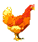

The Chickens are Back....
You may have played the Chicken Plague scenario? If so it helps, it helps even more if you have played the sequel.
Well now it is five years later and they are back but this time with no humans, they eat everything and shall continue to unless you stop them.
Visit Brave Sir Robin official Web Site www.geocities.com/nininini3/ni.html
Or e-mail me at 6bmfeguson@helstonschool.cornwall.sch.uk
Thanks to Luz Piazuelo who made this scenario possible with her fabulous graphics.
This time around you have no annoying fights with loads of easy to kill Chickens, it is big hard fights! Yippy!
Thanks to everyone who complained about my other scenarios, no really thanks.
Hints: No Major spoilers here!
-There is a special item in each town, spare the last one. Try to get them all, magic map spell is useful.
-Walk around outside with the 'fewer wandering monsters' option on, without it fights get annoying.
-Chickens don’t drop gold! But do not fear there isn't much you can buy!
-This scenario is designed so that you take a look around then make a large attack at the Chickens hopefully wiping them out in one big cut up.
-In the queens lair only hack up the queen, after that the Calvary arrive to kill off the others. I know this part of the game really should be under hard difficulty. But just cheat if stuck. I hardly ever put passwords on my scenarios.
If you want a link to your site, section in the Best Artists hall of fame, some graphics or your scenario put on then just visit my website sign the guestbook or drop me a mail.
Updates for V1.1.0
-Made a new readme, do you like it?
-Put flags on some Chickens so they would stop coming back.
-Got rid of a lot of the chickens in Telors tower.
-Added an outdoor encounter explaining the wreck of the Farmyard ruins.
-Got rid of a face from the bitmap file because I don't use it at all (only in the directors cut).
-Caemul talks a lot more and can train you and buy your items.
-The goblins throw darts, fighters throw rocks.
-Goblin fighter is summonable at level 2.
-Made some monsters to summon:
Dwarf
Dwarf Warrior
Black Bear
-Put some chickens in the Body Store.
-Lizzie Talks More
-Made the Guard Forts difficulty 6 instead of 4, faster wandering Chickens.
-Put some items which you may want to steal in the Guard Fort
-Spider in Elizabeth’s quarters talks.
-There is a little loot in Hetis including some limited edition No-Tear pants.
-I thought Telors tower was too hard so I put a Chicken Slayer sword in, which makes a nice souvenir if you are that type of party.
-Brave Sir Robin